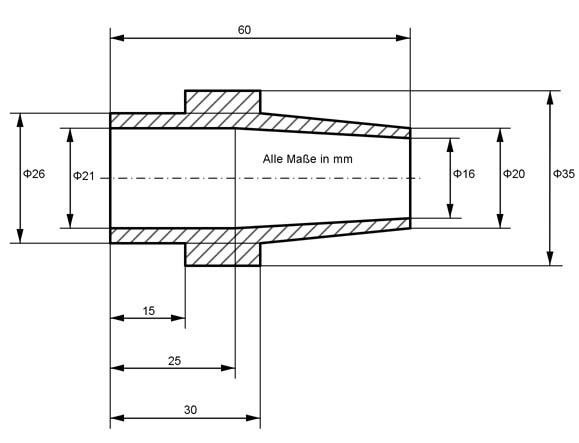

Aufgabe 267
Wie groß sind das Dachvolumen V und die mit
Schindeln zu deckende Dachfläche A?
 V = m3
V = m3
Wie löse ich Matheaufgaben?
Volumen
Aufgabe 267 Wie groß sind das Dachvolumen V und die mit Schindeln zu deckende Dachfläche A?
Aufgabe 268 Wie viel wiegt der Schornstein, wenn seine Dichte 1,8 kg/dm3 beträgt?
Aufgabe 269 Ein Korken ist 3,2 cm hoch, hat die Form eines Kegelstumpfes mit den Durchmessern 3,6 cm und 2,4 cm und eine Dichte von 0,24 g/cm3. Welche Masse m haben 1 000 Stück? m = kg
Aufgabe 270 Ein Fabrikschornstein ist 85 m hoch, hat unten einen Innendurchmesser von 3,6 m und oben einen von 1,9 m. Seine radial gemessene Wandstärke beträgt unten 1,1 m und nimmt nach oben gleichmäßig auf 0,25 m ab. Welche Masse m hat der Kamin, wenn das Mauerwerk eine Dichte von 1,8 kg/dm3 hat?
Aufgabe 271 Ein Baumstamm ist 32,6 m lang, hat unten einen Umfang von 2,2 m und oben einen von 80 cm. Wie groß ist seine Masse m, wenn man ihn als Kegelstumpf auffasst und er eine Dichte von 0,75 kg/dm3 hat ? m = kg
Aufgabe 272 Wie groß ist die Masse m des Verbindungsteils, wenn seine Dichte 7,85 g/cm3 beträgt?
Aufgabe 273 Der Kohlenbunker ist oben offen. Wie viel m³ Kohlen fasst er, und wie groß ist der Materialbedarf M in m2? Er fasst m3.
Aufgabe 274 Welche Masse m hat das Verbindungsteil, wenn seine Dichte 7,2 g/cm3 beträgt?
Aufgabe 275 Aus 10 m³ Beton sollen 3 gleich große Fundamente in der Form eines quadratischen Pyramidenstumpfes gegossen werden. Welche Höhe h hat ein fertiges Fundament, wenn seine Grundkante 0,8 m und seine Deckkante 0,5 m misst? h = m
Aufgabe 276 Ein 55 cm langer Dreikantstahl hat die Form eines Pyramidenstumpfes mit gleichseitigen Dreiecken als Grund- und Deckfläche. Seitenlänge unten 20 cm, oben 5 cm. Wie groß ist der Abfall A, wenn der Stumpf zu einer geraden Pyramide mit gleicher Grundfläche abgeschliffen wird?
Aufgabe 277 Wie viel g Farbe braucht man, um den Auffülltrichter außen zu streichen, wenn man mit 150 g Farbe 1 m2 streichen kann? Man braucht g.
Aufgabe 278 Ein Kunststoffhalbzeug in der Form eines sechseckigen Pyramidenstumpfes mit der Grundkante a = 4 cm, der Deckkante b = 3 cm und der Höhe h = 5 cm wird in einen gleich hohen Stumpf mit der Grundkante d = 5 cm umgepresst. Welche Seitenlänge e hat die neue Deckkante?
Aufgabe 279 Welches Volumen V hat die dargestellte Aufnahmespitze? V = cm3
Aufgabe 280 Wie viel cm² Blech braucht man für die Herstellung des Kruges, wenn man für die Nahtstellen mit 5% Zuschlag rechnen muss?
Aufgabe 281 Ein Bolzen ist 280 mm lang und hat einen Durchmesser von 40 mm. Wie groß ist der Materialabfall A, wenn er an beiden Enden auf einer Länge von 80 mm auf eine Neigung von 1 : 10 abgedreht wird? A = cm3
Aufgabe 282 Welches Volumen V hat ein Eimer mit den Durchmessern 28 cm und 19 cm sowie einer Höhe von 28 cm in Litern?
Aufgabe 283 Wie viel m3 Erdreich müssen für den Wall aufgeschüttet werden? Es sind m3.
Aufgabe 284 Wie viel g wiegen 100 solcher Aluminiumnieten, wenn sie eine Dichte von 2,7 g/cm3 haben?
Aufgabe 285 Wie groß ist der Blechbedarf A für den Trichter, wenn man für die Nahtstellen 5% Zuschlag ansetzt? A = mm2
Aufgabe 286 Wie hoch wird ein Kegelstumpf, der aus einem Bleikegelmit einer Höhe von 5,5 cm und einem Radius der Grundfläche von 1,5 cm gegossen wird, wenn er gleiche Grundfläche wie der Kegel und eine Deckfläche mit einem Radius von 0,5 cm haben soll?
Aufgabe 287 Wie lang muss ein Rundstahl mit einem Durchmesser von 25 mm sein, aus dem ein Kegelstumpf mit einer Höhe von110 mm und den Durchmessern 48 mm und 32 mm geschmiedet werden soll, wenn für den Abbrand 3% Längenzuschlag berechnet werden? Länge l = cm
Aufgabe 288 Wie viel Liter passen in den an dem Pfeiler befestigten Wasserbehälter?

Aufgabe 289 Wie groß ist das Volumen V des in der Vorder- und Draufsicht dargestellten Zeitungsständers?
V = dm3
Aufgabe 290 Wie groß ist das Volumen V der Lagerbuchse?
Aufgabe 291 In der voll ausgegossenen Form für Bleiguss steht das fertige blaue Gussteil mit einer Dichte von 11,34 kg/dm3 nach dem Erkalten auf einer Höhe von 2/3h. Welches Volumen V hatte das flüssige Blei mit einer Dichte von 10,64 kg/dm3? V = dm3
Aufgabe 292 Welche Höhe h muss eine Kunststoffscheibe mit einem Durchmesser von 50 mm haben, damit daraus die Buchsegepresst werden kann?

Aufgabe 293 Welche Masse m hat das Kupplungsteil bei einer Dichtevon 7,2 g/cm3? m = g
Aufgabe 294 Welche Masse m hat die Buchse bei einer Dichte von 8,3 g/cm3? 